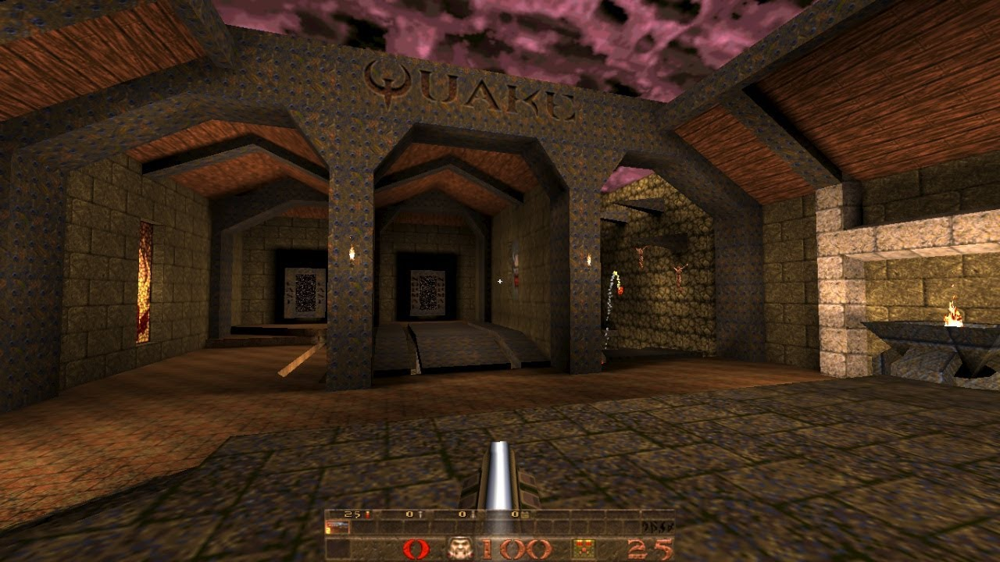

Introducción Diseño de Videojuegos
¿Qué es un videojuego?
Etimológicamente
- Video: Soporte
- Juego: “Acción libre ejecutada como si y sentida como situada fuera de la vida corriente, pero que a pesar de todo puede absorber por completo al jugador”
(Homo Ludens – J Huizinga)
¿Qué caracteriza a un juego?
- Objetivo (Propósito)
- Reglas: normas que definan la acción y los límites de esta
- Retos: Algún tipo de dificultad a superar
- Refuerzos y castigos: El jugador debe saber cuando lo hace bien y cuando mal
Géneros
Igual que en las películas. Juegos que tienen ciertas características comunes que permite englobarlos en un mismo género. Jerarquía de géneros…
- Algunos: Plataformas, acción, beat ’em ups, lucha
- Tipos de cámara: primera, tercera, cenital, isométrica, lateral, on-rail….
Historia de los videojuegos
Los inicios
Primer videojuego OXO (1955) => tres en raya
Tennis for two (1958) (Formalmente)
- Spacewar (1962) (en el MIT)
- Todo era campo y solo universidades…

Comienzan las consolas
- La primera “consola” Magnavox Odyssey (1972)
Atari/Sears Telegames Pong
Color TV-Game (Nintendo) (6 variaciones del tennis)
Segunda generación de consolas (1977)
- Se caracterizan por permitir cartuchos intercambiables
- Atari, coleco visión,
- Empezó muy bien perooo…
- Fuerte Crack de los videojuegos (calidad penosa)
Tercera Generación de consolas
- Nes, Master System
- Resurgimiento y aparición de Nintendo con toda su fuerza
- Sega comienza también a asomar la patita
- Preludio de la guerra de consolas de los 90

Cuarta generación de consolas (Los 16 Bits)
- Hasta ahora los procesadores era de 8 bits.
- Ahora surgen procesadores de 16 bits
- Pasar de 8 a 16 bits tenía implicaciones. A partir de 32..
- Super Nintendo, Mega Drive (Genesis), Turbografx16, Neo Geo
- Máquina arcade en tu hogar
La era 3D
- Primer juego considerado 3D o pseudo 3D: Knight Lore, Spectrum en perspectiva isométrica 3D (Ultimate => Rare)
- Máquinas arcade (Virtua Racing)
- Algunos intentos en los 16 bits (V racing, Star Fox)
- PC: 1992( ID Software: wolfenstain 3D, DooM) (Pseudo 3D)
El 3D “casi” como lo conocemos hoy
- Quake (1996), Quake II / Half life
- Playstation (1995), Sega Saturn (1994) Nintendo 64 (1996) (32 Bits*) (Super Mario 64, Tomb Raider, Metal Gear Solid, Tekken…) 
Las consolas portátiles
- GameBoy (1989)
- Atari Linx
- Game Gear
- GameBoy advance
- PSP
- Las modernas: Vita, Switch, “SteamDeck” …
La irrupción del PC
- Época dorada 1996-2002
- Aparición de las aceleradoras gráficas (3DFX, Nvidia TNT) => GPUS (Gfoce 256) Aceleración de geometría
- Shaders programables => GeForce 3 (2001)
Consolas con shaders programables
- Xbox (SD)
- Xbox 360 (HD) en adelante
- PS3 (HD) en adelante
- Wii u en adelante
La GPU cada vez cobra más protagonismo
- GPGPU: Physx, Compuiter Units (DX 10 en adelante => Wii u primera consola)
- Teselación (DX 11 en adelante, Xbox 360*, ps4/one en adelante)
- Raytracing (Dx 12 ultimate, ps5, series X en adelante, Nvidia RTX)
- Deep learning (Nvidia RTX)
Juego en red y detección de movimiento
- Pionero el PC (DooM)
- Primera consola Dreamcast, Xbox y luego PS2.
- Nace el concepto de E-Sport (Blizzard con Starcraft 1998)
- Wii, Kinect, Move, sensores…
En la actualidad
- VR
- Nube
- Plataformas digitales (Steam)
Roles en el desarrollo de juegos
3 perfiles básicos y multiples adicionales
- Diseñador: El que idea el juego
- Programador: El que lo implementa
- Artista: el que aporta los assets gráficos
- Otros: Sonido, guion, marketing, producción, etc…
Game Designer
Es el encargado de diseñar la experiencia de juego
- Describe las reglas
- La lógica
- Narrativa
- Ambientación
Habilidades de un diseñador
- Capacidad de comunicación
- Buena comunicación escrita
- Conocimientos informáticos. Cuantos más mejor
- Conocimientos de hardware
- Nociones de arte
- Inglés.
Algunos Diseñadores Famosos.
- Miyamoto (Nintendo) : Super Mario Bros, Zelda
- Peter Molyneux (Microsoft, Lionhead Studios, Bullfrog): Populous, Black & White
- Ken Levine (Irrational games): Bioshock
- American McGee (ID software): Doom, Quake, Alice: Madness Returns
- Kim Swift (Valve): Portal
- Robin Walker (Valve): Half Life 1, 2, Alyx, Portal
- Jonh Romero (ID Software): DooM, Quake
- Hideo Kojima (Konami): Metal Gear Solid
¿Conocéis algunos más vosotros?
Tarea para casa, buscar un diseñador de vuestro juego favorito y el próximo día lo comentamos
Elementos formales del diseño de videojuegos
Información disponible
- Pública: El jugador tiene información completa sobre el juego
- Oculta: Información oculta para otros jugadores. La más común
- Privada: Hay parte de información oculta pero se puede revelar
- Privilegiada: Un jugador tiene toda la información y el resto menos
- Compartida: Cuando se decide compartir información de forma voluntaria
Conceptos
- Recursos: Vida, munición, moneda
- Objetivos: Salvar a la princesa en Mario (puede haber secundarios)
- Ambientación: entorno donde se juega.
- Avatar: el representante virtual del jugador en el juego.
- Reglas: conjunto de posibilidades de interacción de los jugadores con el juego (implícitas y explicitas)
Modelo MDA
- Mecánicas: acciones que el jugador puede llevar a cabo en el juego
- Dinámicas: resultado de combinar diferentes mecánicas (Estrategias)
- Experiencias (Aesthetics): las sensaciones que el jugador experimenta al jugar
MDA según la perspectiva

Documentos de Diseño
- Documento de concepto (a veces llamado Pitch)
- EL GDD (Game Design Document)
- No tiene porqué ser un único documento (Wiki por ejemplo)
- Objetivo: Tener una descripción con el suficiente grado de detalle como para permitir una implementación
GDD detallista
- A favor:
- Permite separar la especificación de la implementación
- Permite que la validación final tenga sentido
- Encuentra alguno de los problemas anticipadamente
- En contra:
- Trabajar en el ‘aire’ significa tirar trabajo
- Documentos des-actualizados
- Implementación menos flexible
Feedback
El jugador necesita retroalimentación
- Para saber qué acción ha realizado
- Para saber si la acción realizada ha tenido alguna consecuencia
- Para saber si la consecuencia ha sido positiva o negativa
Cuidado: Si una acción no genera un feedback relevante la primera vez que se usa. El jugador aprenderá a que hacer esa acción es irrelevante
El feedback debe ser gratificante, espectacular, vistoso, que suene bien, que te sirva para el futuro…
Core loop
Es el conjunto de mecánicas que el jugador debe repetir una y otra vez
” Este juego es en el que tienes que… ”
Es lo primero que debe funcionar y la base para que el juego sea bueno.
Loops de feedback
Positivos: Potencian el feedback positivo (Permiten progresión pero cuidado porque pueden hacerse muy chetos)
Negativos: Penalizan la progresión (Pueden percibirse como injustos, pero mantienen la progresión equilibrada)
En el equilibrio de ambos esta el truco :)